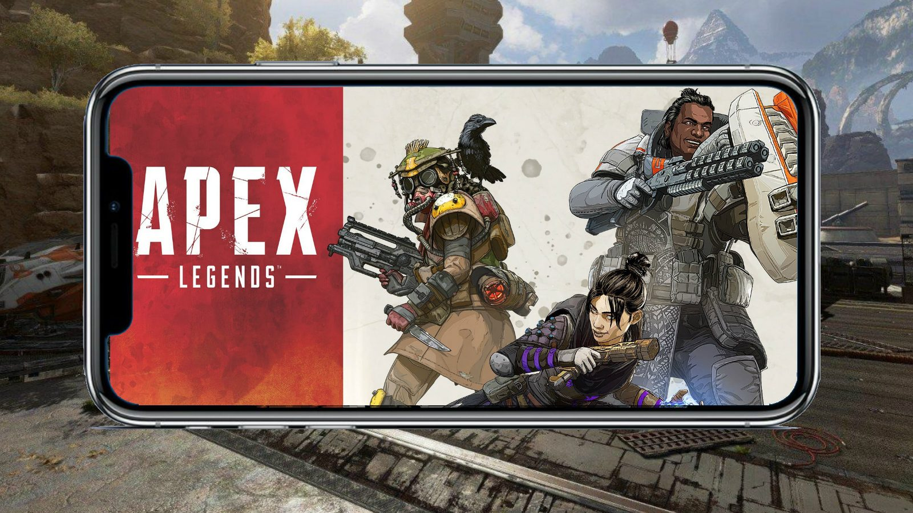
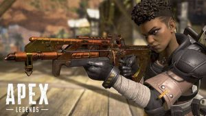

Apex Legends, it is a PC game in which up to 20 three-person squads land on an island before searching for weapons and supplies to attempt to defeat all other players in combat. Each player must keep moving to avoid being caught outside the play area. The final team alive wins the round. The game is set in the same science fiction universe as Respawn Entertainment's Titanfall and Titanfall 2.
This battle royale game was developed by Respawn Entertainment and published by Electronic Arts. It was released for Windows, PlayStation 4 and Xbox One on February 4, 2019, without any prior announcement or marketing. The game is in its fourth season.Work on the game began sometime around late 2016 and early 2017, though the project remained a secret right up until its launch. The game's release in 2019 came as a surprise, as until that point it had been assumed that Respawn Entertainment was working on a third instalment to the Titanfall franchise, the studio's previous major title.
Apex Legends received positive reviews from critics, who praised its gameplay, progression system, and fusion of elements from various genres. Some considered it a worthy competitor to Fortnite Battle Royale, a similar game that had gained massive popularity in the previous year. Apex Legends surpassed over 25 million players by the end of its first week, and 50 million within its first month. According to EA, as of July 2019, the game had approximately 8 to 10 million players a week and by October 2019 it had approximately 70 million players world-wide.
Each match generally features twenty teams of three-player squads. Players can join friends in a squad or can be matched randomly with other players. Prior to the match, each player on the squad selects one of the 12 playable characters (as of Season 4), with the exception that no character may be selected more than once by a squad. Each character in the squad has a unique design, personality, and abilities that provide different playstyles to the team. All teams are then placed on an aircraft that passes over the game map. One player in each squad is the jumpmaster, selecting when the squad should skydive out of the aircraft and where to land with the concurrence of the other squad members. However, players are free to deviate from the squad's path.
Players who become knocked down in the course of a game can be revived by their squadmates. Should a player be killed completely, they can still be resurrected if their team members collect their respawn banner, which appears at the place where they died, and bring it to one of several beacons on the island. The banner, however, must be collected within a time limit, before expiring and fully eliminating the player. Over time, the game's safe zone will reduce in size around a randomly-selected point on the map; players outside the safe zone take damage and may die if they do not reach the safe zone in time. This also confines squads to smaller spaces to force encounters. The last squad with any members left alive are crowned the "Apex Champions" of that match. Players are awarded in-game currency based on their squad's placement as well as experience points.